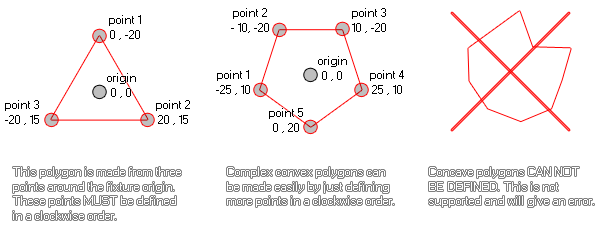

physics_fixture_add_point
This function adds a point to create polygon shape for a fixture.
Syntax :
physics_fixture_add_point(fixture, xpos, ypos)
| Argument | Description |
|---|---|
| fixture | the index of the fixture |
| xpos | the x position of the point relative to the fixture origin |
| ypos | the y position of the point relative to the fixture origin |
Returns : N/A
Description
This function defines the points of a polygon which has previously been set to the fixture using physics_fixture_set_polygon_shape. These points are relative
to the origin of the fixture, with the 0,0 position of the x/y axis being the centre, and the subsequent coordinates being calculated as usual in GameMaker:Studio with down/right being +x,+y and up/left
being -x,-y. Here is an illustration to help you visualise this process:

As you can see, any simple convex polygon can be modelled in this way, but concave polygons are not supported at this moment. Finally, to close the polygon, you must bind the fixture
to an instance. You should note too that you must also have at least three points defined for your polygon before binding it to an instance or you will get an error and that adding a point to a fixture that
does not have a polygon shape set previously will also cause an error. Note too that the maximum number of points permitted for a fixture is eight.
Example :
physics_fixture_set_polygon_shape(fix_Ship);
physics_fixture_add_point(fix_Ship, 0,0);
physics_fixture_add_point(fix_Ship, -40, 100);
physics_fixture_add_point(fix_Ship, 40, 100);
The code above will apply a polygon shape to the fixture indexed in the variable "fix_Ship" and then defines three points to create a triangular shape.